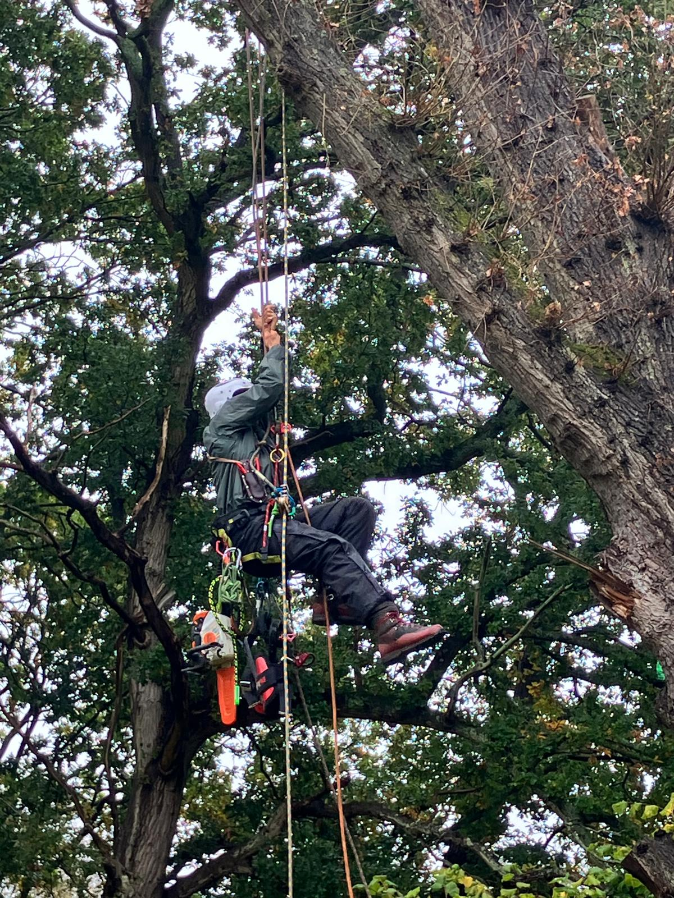

JFD TREEs
ABOUT PAGE
As tree experts, we take a strategic approach to reducing and rejuvenating each species, so that it can thrive. Whether preserving quintessentially British trees through the removal of deadwood and disease that compromises survival or safely removing limbs that pose a threat after a storm, we are renowned for working quickly and effectively across a wide range of gardens and estates. Our arborists are also happy to remove invasive trees, trim hedges or simply tidy up planted areas on request.

CONTACT:
MOBILE: 07425 351 070
EMAIL: jfd@jfdtrees.com
Please contact us to arrange a call & site visit
Copywrite JFD 2024